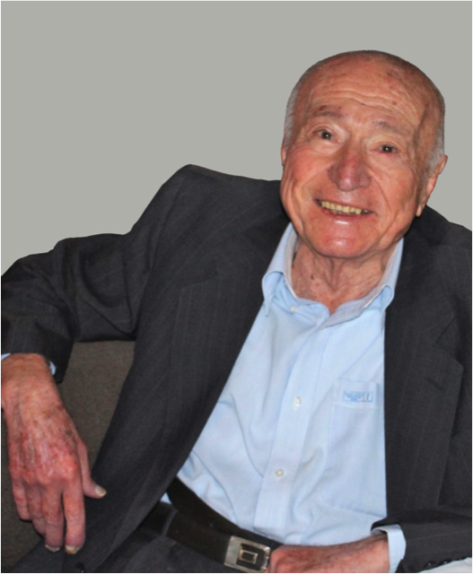

I was rung yesterday by Ida Argy, wife of Fred Argy and she told me that Fred had recently had a stroke from which he did not recover. Fred was rather like my Dad Fred. A Jewish immigrant – Dad was from Austria (via England) and Fred was Egyptian, though I think both were non practicing.Fred Argy was a lovely guy. Affable, generous both publicly and privately, selfless and self-effacing.
When Fred officially retired he proceeded to write two books on Australian public policy. And he posted 117 posts with various thoughts here on Troppo.
On being told the news I asked Ida to convey my condolences to Stephen his son whom I also knew, though not well, at the PC (then Industry Commission). I was told to my shock that Stephen had died over two years ago in a horrible accident at home. He fell from a ladder, never regaining consciousness. He left his happy marriage and three children. I think it was my (non-Jewish) mother who told me of a Jewish saying that when a child dies before its parents, even God weeps.
My heart goes out to Fred and Stephen's family.
Below the fold I've reproduced a bio I requested from Ida which his daughter Janet recently sent me.
Sadly missed. RIP Fred Argy.
Freddy (“Fred”) Argy was born on the 13th June, 1931 in Alexandria, Egypt, the third son of Elie and Lina (née Levy) Argy. After his early French cultural upbringing, Fred attended a British school, Victoria College, where he played cricket and came to love British institutions. Fred worked for his father in his cotton futures business before joining his older brothers in Sydney in 1951. Fred, like his brother Victor, worked at the Mutual Life and Citizens’ Assurance (MLC) during the day and studied as an evening student at Sydney University. He graduated with a Bachelor of Economics (first class honours) in 1956 and a Master of Economics in 1960. While his brother Victor became one of Australia’s most eminent academic economists, Fred pursued a distinguished career in the Commonwealth Public Service as a policy advisor to the federal government.
Senior positions he held included that of Secretary to the influential Campbell Inquiry into the Financial System (1979-81), Deputy Secretary (Labour Economics) of the Department of Employment and Industrial Relations (1985-86) and Director of the Office of the Economic Planning Advisory Commission (1986-91). Fred also served as Australian Ambassador to the Organisation for Economic Cooperation and Development (OECD) in Paris between 1983 and 1985.
After retiring from the Public Service in 1991, Fred continued in a number of public roles. He served as a member of the Commonwealth Grants Commission (1991-96), the President of the Economic Society of Australia (1991-93), Project Director of the Committee for Economic Development of Australia (CEDA) (1992-95), a Director of Legal and General Australia (1992-96) and as a member of the government task force on private sector involvement in public infrastructure (1995-96). He was also a Principal Adviser to the Research Institute for Asia and the Pacific (1997-98) and a consultant to the Evatt Commission on Government Revenue chaired by Bernie Fraser (1997-98). Fred was Chairman of the Transport Industry Superannuation Fund (2000-01) and a Visiting Fellow in the Graduate Program in Public Policy, Crawford School, Australian National University.
Fred was also the author of a number of influential books and papers, strongly arguing the case for a more equitable and fair Australia while demonstrating that this need not be at the expense of economic efficiency.
Fred’s achievements were recognized with a number of awards. In 1982 he was invested as a member of the Order of the British Empire (OBE) and in 1992 as a Member of the Order of Australia (AM). Fred received an Honorary Doctor of Science in Economics, from the University of Sydney in 2003 and was an honorary life member of CEDA and the Economic Society of Australia.
Fred is survived by his wife of 60 years Ida, and their children, grandchildren and great grandchild.
Selected publications
Books:
A long-term economic strategy for Australia, Longman Cheshire, Melbourne, 1992
An Australia that Works: a Vision for the future, CEDA, 1995
Australia at the Crossroads - radical free market or progressive liberalism? Allen & Unwin, Sydney 1998
Where to from here? Australian Egalitarianism under threat, Allen and Unwin, Sydney, 2003
Book chapters:
Arm’s Length Policy-Making: the Privatization of Economic Policy, in Keating, M., Wanna, J. and P. Waller (eds.) Institutions on the Edge, Allen & Unwin, Sydney 2001.
Liberalism and Economic Policy in Nieuwenhuysen, J., Lloyd, P. and M. Mead (eds.) Reshaping Australia's economy: growth with equity and sustainability, Cambridge University Press, Victoria, 2001
Economic Governance and National Institutional Dynamics in Stephen Bell (ed.) Economic Governance, Oxford University Press, Melbourne 2002
Journal and other publications:
Presidential address to 1993 Conference of Economists, Economic Papers 13(1): 97-103, 1994
Financial Deregulation: Past Promise, Future Realities, CEDA 1995
The Integration of World Capital Markets: some economic and social implications, Economic Papers, 15(2): 1-19, 1996
Distributional effects of structural change: some policy implications, in Productivity Commission Structural Adjustment: Exploring the Policy Issues, Workshop Proceedings, AusInfo, Canberra, 1999
Infrastructure and Economic Development, CEDA Information Paper no. 60, April.1999
The Liberal Economic Reforms of the last two decades: a review, Australian Journal of Public Administration, 60(3): 66-77, 2001
Economic rationalism in Australia – Survey of members of the Economic Society of Australia, ACT Branch, Economic Papers, 20(1): 1-14, 2001.
Structural fiscal targeting, Graduate program public policy, ANU, Discussion paper 2001.
National Competition Policy: Some issues, Agenda – A Journal of Policy Analysis and Reform, 9(1): 33-46, 2002
The public borrowing straightjacket: does it make sense? Australian Quarterly 75(6): 4-12, 2003
The divisions between contemporary social democrats, Dissent, April 2004
Balancing conflicting goals: the big challenges for governments, Australian Journal of Public Administration, 63(4): 22-28, 2004.
An analysis of joblessness in Australia, Economic Papers 24(1): 75-96, 2005
sad to hear the loss of Fred. I enjoyed his contributions. My condolences to his friends and family. Paul
Sad news indeed - another very fine Australian gone.
agree, I do think the Argys and Gruens have a lot in common, intelligence being the obvious one.
Very sorry to hear this. Fred was an exceptionally talented, modest and helpful person.
Sad news. Fred was a delightful person, as well as being an important contributor to Australian public policy. Sadly, the times weren't right for a body like EPAC, but it produced some good work under Fred's leadership
Much enjoyed his contribution as a visiting fellow at the Public Policy Program at the ANU when I was a student there and have following his writing since with interest.
I knew his brother Victor quite well in the 1970s. A family of high-achievers.